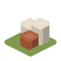
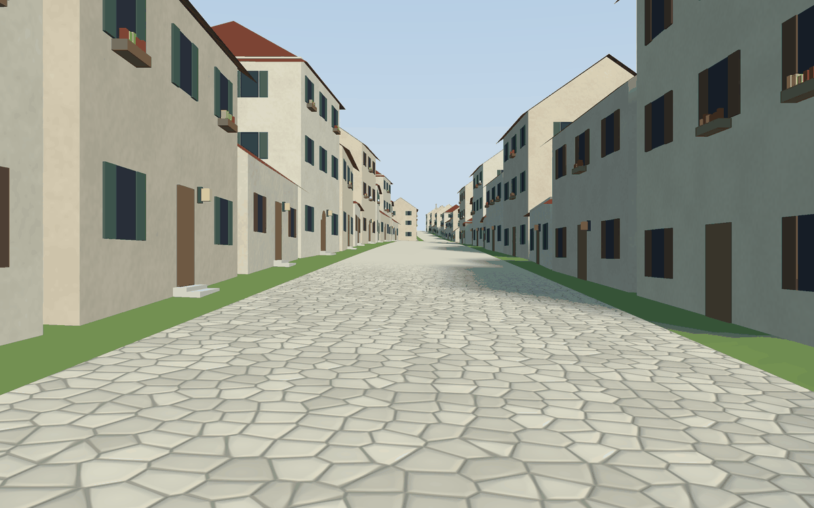

Go Scene Builder turns a flat map into a 3D scene you can walk through: you say what is where (a house here, a street there) and what things look like (stone walls, red roofs), and it builds the village.

It reads three things: a map (the outlines of houses, streets, rivers), a relief (how high the ground is) and style rules (a text file saying what each kind of thing looks like). It writes a .glb scene that Go Renderer’s viewer opens. Change the rules and the same map becomes another village.
Pick the line that sounds like you.
| If you… | Read | Time |
|---|---|---|
| want to see an example right away | The example island | 5 min |
| are new and want to build something | 🏴☠️ The quest: a village from a map, in 6 levels | 60 min |
| want to know what goes in and out | The pipeline | 10 min |
| want to write style rules: roofs, walls, materials | Style rules | — |
| want facades, trees, lamps, rivers, gates | Decoration | — |
Everything here is text files and two commands: one builds the scene, the other opens it.
go run ./cmd/build-scene -map map.geojson -style style.yaml -out village.glb
go run ../go-renderer/cmd/visor village.glb
The quest gives you the files to start from.
The menu on the left (or the files in docs/) follows this order.
Start
Guides
| Word | What it means |
|---|---|
| Terminal | The window where you type commands: Terminal on macOS and Linux, PowerShell on Windows. |
| Repository | A project’s folder of files, kept on GitHub. git clone <address> copies it to your computer. |
| Scene | Everything a 3D picture holds: ground, houses, trees, the sea, the sky and the sun. |
.glb file |
A 3D scene in one file, in the open glTF format: many programs (Blender among them) open and write it. |
| Quest | The tutorial of these docs: short levels, each ending with something that works and an achievement. |
Go Scene Builder is one of a family of small projects that work together:
| Project | What it does |
|---|---|
| Go Renderer | draws 3D scenes and flat interfaces |
| Go UI | buttons, panels and whole applications |
| Go UI for Android | Android apps that look like Android’s own |
| Go Sound | sound and music |
| Go Scene Builder (this one) | 3D scenes from a flat map |
| Go Simulator | simulations that change a scene |
| Go Terrain Simulator | ground shaped by rivers |
| Go Climate Simulator | weather and biomes |
| Go Flora Simulator | forests that grow |
| Go Urban Simulator | towns that grow |
| Go Motion Simulator | a scene that moves |
| Go for 3DS | Go on the Nintendo 3DS |
⚠️ All of them are educational experiments, written with an AI assistant and pending review by their author: good for learning and playing, not for production.